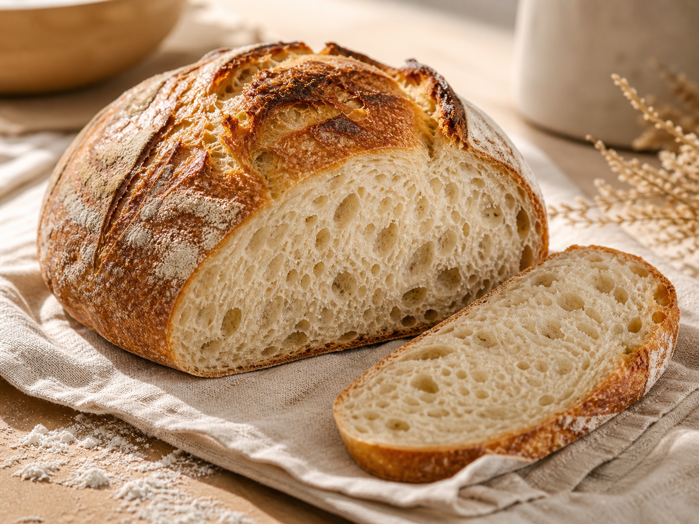

Signature loaf
$12
Organic Country Sourdough
The everyday loaf: open crumb, caramelized crust, mild tang, and a soft center for toast, sandwiches, and soup nights.
Organic loaves and cookies from Riverton, Utah
Home-baked sourdough and thick cookies from a Riverton kitchen, made slowly with organic flour, good butter, and a porch-pickup kind of welcome.
Only uses organic ingredientsOrganic flour, organic sugar, good butter, and simple pantry staples in every bake.
Small batch onlyEnough to keep it special, never enough to feel factory-made.
Riverton handoffPickup near home base with nearby delivery by request.
Meet the baker
Riverton Rise is meant to feel personal: the kind of bread you text a neighbor about, the cookie box you bring to Sunday dinner, and the loaf that makes soup night a little more serious.
I bake in small, preorder-only rounds so the loaves are fresh, the cookies stay soft in the middle, and every order still feels like it came from a real kitchen instead of a production line.
Slow food, simple rhythm
Levain is mixed the night before dough day so the loaves rise naturally without commercial yeast.
Long fermentation builds flavor, improves texture, and gives each loaf its blistered crust.
Cookie dough rests for a richer bite, then bakes in small rounds close to pickup time.
Riverton pickup
Current handoff windows are Friday evening and Saturday morning in Riverton. If you are close by, ask about delivery. I will say yes when the bake schedule and the route make sense.
Home base
Pickup stays local, with occasional doorstep runs into nearby neighborhoods when timing works. The exact pickup address is shared after an order is confirmed.
Reserve a bake
Send a preorder note and I will confirm availability, pickup timing, and any delivery request before payment.